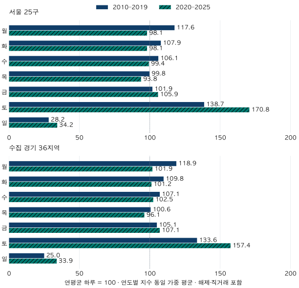

계절과 계약 달력 · 요일과 월말
아파트 계약은 토요일과 월말에 몰릴까? 서울·경기 달력 비교
2010~2025년 서울·수집 경기 매매 계약의 요일과 월말 패턴을 비교했습니다. 요일 수·월 길이·월별 구성과 해제·직거래 제외 조건을 맞추고, 계약하기 좋은 날을 추정할 수 없는 한계를 확인합니다.
분석 기간 · 2010~2025년 계약일 · 완결 16년 | 보유 자료 스냅샷 생성 · 자료 2026-10-04 · 집계 2026-10-10
아파트 매매 계약은 토요일에 많이 쓰고, 월말에도 몰릴까요? 서울·수집 경기의 관측 자료에서는 토요일 계약이 많았지만, 월말 집중은 같은 방식으로 반복되지 않았습니다. 2020~2025년 토요일의 하루 계약 건수는 각 연도의 하루 평균보다 서울 약 71%, 수집 경기 약 57% 많았습니다. 다만 이 숫자는 토요일이 더 싸거나 안전한 계약일이라는 뜻이 아닙니다.
신고한 요일이 아니라 계약일의 요일입니다
국토부 실거래가 공개 FAQ는 계약일과 신고일에 시차가 있고, 자료를 계약일 기준으로 공개한다고 설명합니다. 이 글도 원천의 계약년·월·일을 사용했습니다. 신고일은 이 자료에 없고, 등기일을 대신 넣지도 않았습니다. 토요일에 계약이 많다고 해서 토요일 신고가 많았다고 말할 수는 없습니다.
서울 25개 구와 수집한 경기 36개 시·구, 전체 전용면적의 2010~2025년 매매 계약을 비교했습니다. 인천과 미수집 경기 지역은 제외합니다. 2026년은 연도가 끝나지 않아 넣지 않았습니다. 현재 보유한 단지 목록과 정제 자료로 과거 계약을 다시 센 결과이며, 당시 공개됐던 정보만을 모은 통계는 아닙니다.
긴 기간을 같은 규칙으로 비교하려고 본 비교에는 해제 표시와 직거래를 포함했습니다. 해제 공개는 2020년 2월, 거래 유형 표시는 2021년 11월부터여서 이전의 빈칸을 ‘해제 아님·중개거래’로 채울 수 없기 때문입니다. 따라서 본 비교를 완료된 중개 매매 건수라고 부르면 안 됩니다. 두 표시가 있는 2022~2025년에는 해제·직거래를 제외한 결과를 따로 확인했습니다.
토요일에 많았다는 말은 얼마나 큰 차이일까요?
한 해에 월요일이 53번, 다른 요일이 52번 있는 경우처럼 요일별 날짜 수부터 다릅니다. 각 요일의 계약 건수를 그 요일의 실제 달력일수로 나누고, 다시 그해의 하루 평균으로 나눠 100을 곱했습니다. 지수 170이면 하루 평균보다 70% 많다는 뜻이지, 전체 계약의 70%가 그 요일이라는 뜻은 아닙니다.
요일 지수 = (해당 요일 계약 건수 ÷ 해당 요일 날짜 수) ÷ (연간 계약 건수 ÷ 연간 날짜 수) × 100

| 지역·요일 | 2010~2019 포함 | 2020~2025 포함 | 2022~2025 포함 | 2022~2025 제외 |
|---|---|---|---|---|
| 서울 25구 · 월 | 117.6 | 98.1 | 96.5 | 92.7 |
| 서울 25구 · 화 | 107.9 | 98.1 | 96.8 | 95.5 |
| 서울 25구 · 수 | 106.1 | 99.4 | 100.2 | 99.5 |
| 서울 25구 · 목 | 99.8 | 93.8 | 94.6 | 92.0 |
| 서울 25구 · 금 | 101.9 | 105.9 | 110.6 | 107.7 |
| 서울 25구 · 토 | 138.7 | 170.8 | 166.1 | 175.9 |
| 서울 25구 · 일 | 28.2 | 34.2 | 35.6 | 36.8 |
| 수집 경기 36지역 · 월 | 118.9 | 101.9 | 100.6 | 98.5 |
| 수집 경기 36지역 · 화 | 109.8 | 101.2 | 101.4 | 99.9 |
| 수집 경기 36지역 · 수 | 107.1 | 102.5 | 103.8 | 102.7 |
| 수집 경기 36지역 · 목 | 100.6 | 96.1 | 97.2 | 95.4 |
| 수집 경기 36지역 · 금 | 105.1 | 107.1 | 110.2 | 108.8 |
| 수집 경기 36지역 · 토 | 133.6 | 157.4 | 152.0 | 159.0 |
| 수집 경기 36지역 · 일 | 25.0 | 33.9 | 34.9 | 35.9 |
토요일 지수는 2010~2019년 평균에 서울 138.7·수집 경기 133.6, 2020~2025년 평균에는 170.8·157.4였습니다. 뒤의 여섯 해는 두 지역 모두 매년 100을 넘었습니다. 반면 일요일은 매년 100보다 낮았습니다. 이 표에서 확인되는 것은 요일별 관측 계약의 차이입니다. 근무 형태나 중개업소 운영 변화 때문에 차이가 커졌는지는 별도 자료가 필요합니다.
월말 계약은 토요일 구성 때문에 많아 보일 수도 있을까요?
월말은 28일 이후처럼 고정된 날짜가 아니라 그달의 마지막 3일로 정했습니다. 윤년 2월이면 27~29일, 31일까지 있는 달이면 29~31일입니다. 월초는 첫 3일이고, 그 사이를 중간으로 나눴습니다. 3·6·9·12월의 월말은 ‘분기 월말’, 나머지 8개월은 ‘일반 월말’입니다.
월말에 토요일이 많이 포함되거나 거래가 활발한 달의 비중이 커지면, 날짜 수만 나눈 비교에도 그 영향이 남습니다. 그래서 각 월 안에서 같은 요일의 하루 평균을 구해 비교 건수를 만들었습니다. 가상 예시로 어느 달 금요일 5번의 계약이 합계 100건이라면 금요일 하루의 비교 건수는 20건입니다. 월말 구간에 금요일이 한 번 들어 있으면 20건을 더하고, 다른 날짜도 같은 방식으로 더합니다.
월·요일 구성 보정 지수 = 구간의 실제 계약 건수 합계 ÷ 같은 달·같은 요일 평균으로 만든 비교 건수 합계 × 100
이 비교 건수는 그 기간의 관측 자료에서 계산한 내부 기준입니다. 별도의 미래 예측이나 공식 계절조정 수치가 아닙니다. 공휴일·명절, 월중 상승·하락 추세까지 없애는 계산도 아닙니다.
| 지역·구간 | 2010~2019 포함 | 2020~2025 포함 | 2022~2025 포함 | 2022~2025 제외 |
|---|---|---|---|---|
| 서울 25구 · 월초 | 95.3 | 89.1 | 89.2 | 90.3 |
| 서울 25구 · 중간 | 100.5 | 101.5 | 101.8 | 101.7 |
| 서울 25구 · 일반 월말 | 102.7 | 101.3 | 99.5 | 97.1 |
| 서울 25구 · 분기 월말 | 95.4 | 93.1 | 91.7 | 93.6 |
| 수집 경기 36지역 · 월초 | 96.4 | 91.6 | 93.5 | 93.2 |
| 수집 경기 36지역 · 중간 | 100.4 | 101.4 | 101.4 | 101.5 |
| 수집 경기 36지역 · 일반 월말 | 103.5 | 99.5 | 97.1 | 95.9 |
| 수집 경기 36지역 · 분기 월말 | 94.6 | 91.6 | 91.0 | 91.3 |
2020~2025년 일반 월말은 서울 101.3, 수집 경기 99.5로 기준에 가까웠습니다. 100을 넘은 해도 각각 6년 중 4년·3년입니다. 분기 월말은 93.1·91.6으로 낮았고, 100을 넘은 해는 1년·2년이었습니다. ‘월말이나 분기 말이면 항상 계약이 몰린다’는 설명은 이 비교와 맞지 않습니다.
계산 기준이 방향까지 바꾸는 사례도 있습니다. 2022~2025년 서울의 해제·직거래 제외 계약에서 분기 말 3일은 단순 일수 보정 평균이 102.7이지만, 월·요일 구성 보정 뒤에는 93.6입니다. 같은 계약도 비교하는 분모가 달라지면 ‘많다’는 판단이 달라집니다. 이를 분기 말의 인과효과로 읽어서는 안 됩니다.
최근 기간이나 월말 범위를 바꿔도 같을까요?
2022~2025년만 따로 비교하면, 해제·직거래를 제외해도 토요일 평균은 서울 175.9·수집 경기 159.0으로 높았습니다. 다만 긴 기간의 포함 기준과 최근 제외 기준을 바로 이어 붙이면 서로 다른 모집단을 비교하게 됩니다. 위 표는 같은 최근 기간의 포함·제외 열을 나란히 두어 그 차이를 드러냅니다.
월말을 마지막 1일 또는 7일로 바꿔도 살펴봤습니다. 2020~2025년 포함 기준의 일반 월말 평균은 서울 99.4~101.3, 수집 경기 98.5~99.5였습니다. 분기 월말 평균은 서울 89.9~96.9, 수집 경기 88.8~94.1입니다. 범위에 따라 값이 움직이므로 가장 높은 구간 하나를 대표값으로 고르지 않았습니다.
첫/마지막 1일·3일·7일의 모든 기간 비교 보기
| 지역·기간·조건·범위 | 월초 | 중간 | 일반 월말 | 분기 월말 |
|---|---|---|---|---|
| 서울 25구 2010–2019 포함 · 1일 | 97.6 | 100.0 | 103.3 | 96.8 |
| 서울 25구 2010–2019 포함 · 3일 | 95.3 | 100.5 | 102.7 | 95.4 |
| 서울 25구 2010–2019 포함 · 7일 | 96.1 | 101.5 | 103.3 | 94.3 |
| 서울 25구 2020–2025 포함 · 1일 | 88.8 | 100.6 | 99.4 | 89.9 |
| 서울 25구 2020–2025 포함 · 3일 | 89.1 | 101.5 | 101.3 | 93.1 |
| 서울 25구 2020–2025 포함 · 7일 | 92.5 | 103.5 | 100.2 | 96.9 |
| 서울 25구 2022–2025 포함 · 1일 | 89.4 | 100.6 | 98.7 | 89.7 |
| 서울 25구 2022–2025 포함 · 3일 | 89.2 | 101.8 | 99.5 | 91.7 |
| 서울 25구 2022–2025 포함 · 7일 | 90.6 | 104.1 | 100.5 | 98.6 |
| 서울 25구 2022–2025 제외 · 1일 | 88.9 | 100.7 | 96.5 | 91.6 |
| 서울 25구 2022–2025 제외 · 3일 | 90.3 | 101.7 | 97.1 | 93.6 |
| 서울 25구 2022–2025 제외 · 7일 | 90.7 | 104.0 | 99.8 | 99.9 |
| 수집 경기 36지역 2010–2019 포함 · 1일 | 98.0 | 100.0 | 102.4 | 97.2 |
| 수집 경기 36지역 2010–2019 포함 · 3일 | 96.4 | 100.4 | 103.5 | 94.6 |
| 수집 경기 36지역 2010–2019 포함 · 7일 | 97.6 | 101.4 | 102.2 | 93.4 |
| 수집 경기 36지역 2020–2025 포함 · 1일 | 91.3 | 100.5 | 98.5 | 88.8 |
| 수집 경기 36지역 2020–2025 포함 · 3일 | 91.6 | 101.4 | 99.5 | 91.6 |
| 수집 경기 36지역 2020–2025 포함 · 7일 | 95.1 | 103.2 | 99.0 | 94.1 |
| 수집 경기 36지역 2022–2025 포함 · 1일 | 92.1 | 100.5 | 97.9 | 91.3 |
| 수집 경기 36지역 2022–2025 포함 · 3일 | 93.5 | 101.4 | 97.1 | 91.0 |
| 수집 경기 36지역 2022–2025 포함 · 7일 | 94.3 | 103.1 | 98.7 | 97.5 |
| 수집 경기 36지역 2022–2025 제외 · 1일 | 91.8 | 100.5 | 96.1 | 92.5 |
| 수집 경기 36지역 2022–2025 제외 · 3일 | 93.2 | 101.5 | 95.9 | 91.3 |
| 수집 경기 36지역 2022–2025 제외 · 7일 | 94.4 | 103.4 | 97.7 | 97.5 |
연도별 결과와 건수도 아래에 모두 남겼습니다. 거래가 많았던 해가 기간 평균을 지배하지 않도록 같은 가중치를 줬지만, 이는 불확실성 구간이나 미래 재현 확률은 아닙니다. 2010~2019년과 2020~2025년은 길이가 다르고, 거래된 집과 가구의 구성·공개 제도·시장 국면도 달라졌습니다. 전세 계약의 1~2월 패턴과도 계약 종류와 질문이 다릅니다.
계약일을 정할 때 이 결과로 무엇을 확인할 수 있을까요?
- ‘주말’을 한 덩어리로 보지 않습니다. 이 관측에서는 토요일과 일요일의 계약 활동이 크게 달랐습니다.
- 많다는 말의 기준을 확인합니다. 실제 요일 수, 월 길이, 월·요일 구성, 해제·직거래 포함 여부에 따라 분모가 달라집니다.
- 내 일정은 별도로 맞춥니다. 이 자료에는 계약의 안전성, 개인의 자금 이체 가능 여부, 원하는 잔금·입주 일정이 없습니다. 과거 건수로 이를 판단할 수 없습니다.
- 가격 판단은 같은 조건의 가격 근거로 합니다. 토요일에 계약이 많았다는 이유로 싸게 사거나 좋은 매물을 찾을 확률이 높다고 결론 내리지 않습니다.
계약일 통계를 신고일이나 잔금일의 달력으로 바꾸어 읽지 않는 것이 첫 단계입니다. 월별 흐름을 더 넓게 보려면 서울 매매 계약의 계절 비교를 함께 읽을 수 있습니다.
연도별 지수·건수와 계산·출처 확인하기
출처는 국토부 아파트 매매 실거래 상세 자료입니다. 2010~2025년, 현재 단지 목록의 서울25구·수집경기36지역, 전용면적 전체를 사용했습니다. 같은 계약의 원천 행을 정제 규칙으로 합친 뒤 유효한 양수 가격·면적을 사용하고 토지임대부를 제외했습니다. 포함 기준은 해제·직거래를 남기며, 제외 기준은 해당 표시가 모두 제공되는 최근4년에만 비교합니다.
자료 스냅샷 생성일 2026-10-04, 집계·공식 설명 확인일 2026-10-10. 과거 계약은 나중에 정정될 수 있고, 정확한 정보 가용 시점은 확인되지 않습니다. 원천 필드로 재구성한 3,034,254행의 날짜·분류와 일별 집계, 별도 SQL 달력 및 비교 건수 계산480셀을 대조했습니다. 기존 전세 계절 글의 매매96개월 합계와도 일치했습니다. 소수 셀 및 겹치는 구간·포함/제외 차감 검사를 거쳤으며 개인·단지 식별자는 공개하지 않습니다.
표의 형식은 지수 (계약 건수)입니다. 요일 표는 해당 연도의 하루 평균=100, 구간 표는 해당 연도의 월·요일 구성 보정=100입니다. 반올림 전 지수, 단순 일수 보정값, 달력일수와 비교 건수는 공개 집계 JSON에 있습니다. 공휴일 통제·가격효과·주말 신고 관행의 원인 판정은 하지 않았습니다.
서울의 모든 연도 · 요일
| 연도·조건 | 월 | 화 | 수 | 목 | 금 | 토 | 일 |
|---|---|---|---|---|---|---|---|
| 2010 · 포함 | 119.7 (7,520건) | 115.6 (7,264건) | 112.3 (7,055건) | 107.5 (6,750건) | 104.4 (6,686건) | 115.3 (7,243건) | 25.1 (1,576건) |
| 2011 · 포함 | 122.3 (9,444건) | 114.2 (8,822건) | 108.6 (8,388건) | 105.2 (8,123건) | 102.9 (7,945건) | 120.4 (9,481건) | 26.0 (2,012건) |
| 2012 · 포함 | 120.6 (7,117건) | 109.8 (6,355건) | 110.7 (6,409건) | 110.3 (6,388건) | 107.9 (6,244건) | 116.4 (6,741건) | 25.3 (1,495건) |
| 2013 · 포함 | 126.3 (12,193건) | 108.8 (10,701건) | 109.8 (10,596건) | 100.6 (9,709건) | 101.1 (9,764건) | 123.2 (11,897건) | 30.0 (2,900건) |
| 2014 · 포함 | 119.7 (14,494건) | 109.2 (13,226건) | 106.9 (13,196건) | 99.3 (12,029건) | 100.8 (12,207건) | 133.2 (16,134건) | 30.8 (3,725건) |
| 2015 · 포함 | 118.5 (20,196건) | 107.0 (18,233건) | 103.8 (17,699건) | 95.9 (16,657건) | 101.5 (17,297건) | 143.6 (24,485건) | 29.8 (5,084건) |
| 2016 · 포함 | 115.8 (18,053건) | 106.4 (16,592건) | 101.9 (15,896건) | 97.2 (15,158건) | 99.3 (15,789건) | 149.8 (23,817건) | 28.6 (4,459건) |
| 2017 · 포함 | 111.3 (16,586건) | 103.9 (15,483건) | 101.2 (15,084건) | 95.2 (14,181건) | 101.0 (15,044건) | 160.8 (23,952건) | 28.0 (4,246건) |
| 2018 · 포함 | 109.9 (12,967건) | 103.8 (12,013건) | 106.7 (12,347건) | 95.2 (11,015건) | 99.3 (11,497건) | 157.6 (18,244건) | 27.3 (3,160건) |
| 2019 · 포함 | 112.0 (11,895건) | 100.1 (10,833건) | 98.9 (10,503건) | 91.5 (9,716건) | 100.6 (10,683건) | 166.0 (17,636건) | 31.0 (3,288건) |
| 2020 · 포함 | 105.4 (12,252건) | 102.9 (11,964건) | 95.5 (11,315건) | 93.7 (11,101건) | 95.5 (11,103건) | 176.2 (20,489건) | 31.1 (3,613건) |
| 2021 · 포함 | 97.1 (5,860건) | 98.2 (5,923건) | 100.0 (6,034건) | 91.0 (5,493건) | 97.5 (5,994건) | 184.1 (11,105건) | 32.2 (1,941건) |
| 2022 · 포함 | 102.8 (1,763건) | 104.1 (1,784건) | 108.5 (1,860건) | 100.3 (1,719건) | 117.9 (2,022건) | 137.9 (2,410건) | 27.8 (476건) |
| 2023 · 포함 | 103.7 (5,073건) | 97.3 (4,757건) | 99.0 (4,843건) | 93.1 (4,552건) | 105.9 (5,181건) | 167.2 (8,176건) | 35.1 (1,751건) |
| 2024 · 포함 | 93.3 (7,508건) | 93.2 (7,495건) | 96.4 (7,609건) | 93.9 (7,415건) | 103.1 (8,138건) | 182.1 (14,369건) | 38.3 (3,019건) |
| 2025 · 포함 | 86.0 (9,537건) | 92.8 (10,296건) | 96.8 (10,948건) | 90.9 (10,088건) | 115.2 (12,784건) | 177.2 (19,653건) | 41.1 (4,559건) |
| 2022 · 제외 | 97.4 (1,343건) | 102.4 (1,411건) | 108.5 (1,496건) | 93.3 (1,286건) | 111.1 (1,531건) | 156.5 (2,199건) | 29.7 (409건) |
| 2023 · 제외 | 97.8 (4,294건) | 96.2 (4,226건) | 98.3 (4,316건) | 91.9 (4,036건) | 103.8 (4,560건) | 177.0 (7,774건) | 36.2 (1,621건) |
| 2024 · 제외 | 91.4 (6,749건) | 90.4 (6,680건) | 96.3 (6,980건) | 93.5 (6,777건) | 101.7 (7,373건) | 187.9 (13,622건) | 39.1 (2,834건) |
| 2025 · 제외 | 84.2 (8,308건) | 92.9 (9,174건) | 95.0 (9,558건) | 89.5 (8,832건) | 114.4 (11,288건) | 182.0 (17,966건) | 42.1 (4,154건) |
수집 경기의 모든 연도 · 요일
| 연도·조건 | 월 | 화 | 수 | 목 | 금 | 토 | 일 |
|---|---|---|---|---|---|---|---|
| 2010 · 포함 | 122.3 (14,074건) | 111.9 (12,873건) | 111.9 (12,877건) | 108.5 (12,483건) | 106.4 (12,473건) | 116.1 (13,358건) | 22.7 (2,610건) |
| 2011 · 포함 | 121.2 (18,501건) | 113.7 (17,358건) | 109.8 (16,759건) | 103.9 (15,851건) | 104.8 (15,989건) | 122.2 (19,005건) | 24.1 (3,674건) |
| 2012 · 포함 | 121.1 (13,562건) | 110.4 (12,128건) | 111.5 (12,257건) | 105.9 (11,641건) | 106.8 (11,740건) | 120.4 (13,235건) | 24.9 (2,786건) |
| 2013 · 포함 | 126.3 (22,702건) | 112.8 (20,662건) | 106.6 (19,155건) | 100.4 (18,054건) | 104.3 (18,753건) | 122.8 (22,073건) | 26.6 (4,775건) |
| 2014 · 포함 | 120.6 (25,739건) | 109.1 (23,280건) | 105.7 (22,997건) | 100.8 (21,501건) | 104.4 (22,280건) | 133.2 (28,427건) | 26.0 (5,557건) |
| 2015 · 포함 | 119.4 (29,605건) | 109.7 (27,209건) | 106.4 (26,389건) | 97.3 (24,581건) | 104.6 (25,932건) | 137.5 (34,095건) | 25.2 (6,241건) |
| 2016 · 포함 | 117.4 (25,247건) | 108.4 (23,323건) | 104.1 (22,401건) | 99.3 (21,370건) | 105.0 (23,033건) | 140.1 (30,722건) | 24.8 (5,326건) |
| 2017 · 포함 | 112.8 (21,745건) | 109.0 (21,013건) | 106.1 (20,452건) | 98.4 (18,962건) | 104.6 (20,154건) | 147.7 (28,463건) | 22.9 (4,503건) |
| 2018 · 포함 | 111.6 (21,807건) | 108.0 (20,705건) | 106.5 (20,419건) | 96.1 (18,419건) | 103.7 (19,883건) | 149.0 (28,563건) | 24.6 (4,724건) |
| 2019 · 포함 | 116.0 (20,508건) | 105.2 (18,950건) | 102.3 (18,072건) | 95.6 (16,901건) | 105.9 (18,715건) | 146.8 (25,949건) | 28.0 (4,948건) |
| 2020 · 포함 | 106.3 (33,045건) | 104.8 (32,589건) | 100.6 (31,870건) | 98.3 (31,162건) | 100.1 (31,115건) | 159.4 (49,569건) | 30.6 (9,513건) |
| 2021 · 포함 | 102.9 (17,683건) | 96.9 (16,651건) | 99.0 (17,006건) | 89.7 (15,421건) | 101.7 (17,806건) | 176.8 (30,380건) | 33.0 (5,664건) |
| 2022 · 포함 | 105.1 (5,528건) | 103.6 (5,451건) | 106.9 (5,620건) | 97.8 (5,142건) | 108.3 (5,694건) | 144.4 (7,740건) | 33.1 (1,742건) |
| 2023 · 포함 | 103.3 (12,403건) | 104.3 (12,522건) | 103.6 (12,446건) | 96.5 (11,585건) | 109.3 (13,130건) | 150.5 (18,081건) | 33.8 (4,137건) |
| 2024 · 포함 | 98.0 (14,578건) | 97.6 (14,514건) | 104.7 (15,281건) | 99.9 (14,576건) | 108.5 (15,824건) | 156.3 (22,796건) | 35.1 (5,118건) |
| 2025 · 포함 | 95.8 (16,985건) | 100.1 (17,744건) | 100.0 (18,067건) | 94.7 (16,779건) | 114.8 (20,349건) | 157.0 (27,819건) | 37.6 (6,662건) |
| 2022 · 제외 | 101.4 (4,578건) | 100.8 (4,551건) | 105.0 (4,739건) | 93.9 (4,237건) | 106.9 (4,823건) | 155.8 (7,169건) | 35.1 (1,584건) |
| 2023 · 제외 | 101.9 (11,095건) | 103.1 (11,226건) | 102.2 (11,124건) | 94.8 (10,326건) | 107.5 (11,701건) | 157.1 (17,107건) | 34.7 (3,849건) |
| 2024 · 제외 | 96.0 (12,914건) | 96.3 (12,954건) | 104.2 (13,744건) | 99.0 (13,065건) | 107.1 (14,125건) | 161.8 (21,340건) | 35.7 (4,711건) |
| 2025 · 제외 | 94.5 (14,962건) | 99.2 (15,702건) | 99.4 (16,041건) | 93.7 (14,839건) | 113.7 (18,004건) | 161.4 (25,558건) | 38.1 (6,029건) |
서울의 모든 연도 · 월초/월말
| 연도·조건 | 월초 | 중간 | 일반 월말 | 분기 월말 |
|---|---|---|---|---|
| 2010 · 포함 | 94.7 (4,208건) | 100.5 (35,702건) | 101.9 (2,554건) | 101.0 (1,630건) |
| 2011 · 포함 | 89.5 (4,751건) | 101.7 (44,264건) | 99.1 (3,559건) | 90.7 (1,641건) |
| 2012 · 포함 | 96.6 (3,807건) | 100.9 (33,086건) | 103.0 (2,796건) | 81.9 (1,060건) |
| 2013 · 포함 | 98.0 (6,463건) | 99.7 (54,303건) | 104.6 (4,601건) | 104.0 (2,393건) |
| 2014 · 포함 | 95.3 (7,816건) | 100.8 (69,188건) | 94.7 (5,223건) | 104.0 (2,784건) |
| 2015 · 포함 | 95.0 (11,172건) | 101.0 (97,185건) | 104.2 (8,293건) | 81.0 (3,001건) |
| 2016 · 포함 | 98.9 (10,589건) | 99.8 (88,053건) | 102.1 (7,193건) | 104.6 (3,929건) |
| 2017 · 포함 | 94.4 (9,990건) | 100.1 (83,720건) | 113.0 (7,493건) | 90.9 (3,373건) |
| 2018 · 포함 | 97.7 (7,811건) | 101.2 (65,873건) | 99.5 (5,653건) | 77.6 (1,906건) |
| 2019 · 포함 | 93.2 (6,762건) | 99.6 (59,587건) | 105.2 (5,327건) | 118.6 (2,878건) |
| 2020 · 포함 | 83.0 (6,568건) | 102.0 (67,212건) | 102.8 (5,407건) | 96.3 (2,650건) |
| 2021 · 포함 | 94.9 (4,145건) | 100.2 (33,959건) | 107.4 (3,197건) | 95.4 (1,049건) |
| 2022 · 포함 | 84.7 (977건) | 102.2 (9,891건) | 95.0 (742건) | 100.0 (424건) |
| 2023 · 포함 | 92.2 (3,094건) | 102.3 (28,368건) | 101.2 (2,097건) | 65.6 (774건) |
| 2024 · 포함 | 90.7 (5,015건) | 100.6 (44,723건) | 99.0 (3,662건) | 115.2 (2,153건) |
| 2025 · 포함 | 89.2 (6,870건) | 101.9 (63,557건) | 102.7 (4,652건) | 85.9 (2,786건) |
| 2022 · 제외 | 87.7 (820건) | 102.0 (7,922건) | 89.2 (571건) | 107.6 (362건) |
| 2023 · 제외 | 93.5 (2,830건) | 102.2 (25,438건) | 100.3 (1,858건) | 65.6 (701건) |
| 2024 · 제외 | 91.0 (4,604건) | 100.6 (41,095건) | 99.1 (3,351건) | 114.7 (1,965건) |
| 2025 · 제외 | 89.0 (6,061건) | 102.1 (56,736건) | 99.9 (3,966건) | 86.4 (2,517건) |
수집 경기의 모든 연도 · 월초/월말
| 연도·조건 | 월초 | 중간 | 일반 월말 | 분기 월말 |
|---|---|---|---|---|
| 2010 · 포함 | 98.9 (7,996건) | 99.6 (64,866건) | 104.1 (4,720건) | 105.8 (3,166건) |
| 2011 · 포함 | 90.4 (9,596건) | 101.5 (87,177건) | 102.0 (7,180건) | 87.5 (3,184건) |
| 2012 · 포함 | 98.0 (7,320건) | 100.8 (62,675건) | 104.6 (5,348건) | 78.2 (2,006건) |
| 2013 · 포함 | 96.9 (12,014건) | 99.6 (100,866건) | 107.0 (8,897건) | 104.6 (4,397건) |
| 2014 · 포함 | 92.3 (13,347건) | 101.1 (122,236건) | 96.5 (9,470건) | 102.0 (4,728건) |
| 2015 · 포함 | 96.7 (16,439건) | 100.8 (141,214건) | 105.6 (12,211건) | 78.4 (4,188건) |
| 2016 · 포함 | 97.1 (14,317건) | 100.1 (121,949건) | 100.1 (9,719건) | 106.2 (5,437건) |
| 2017 · 포함 | 95.1 (12,700건) | 100.5 (109,340건) | 105.9 (8,668건) | 91.7 (4,584건) |
| 2018 · 포함 | 105.6 (14,187건) | 99.8 (107,219건) | 102.0 (9,037건) | 84.3 (4,077건) |
| 2019 · 포함 | 92.7 (11,218건) | 100.0 (99,513건) | 107.5 (9,006건) | 107.2 (4,306건) |
| 2020 · 포함 | 79.0 (16,758건) | 102.8 (181,081건) | 104.0 (15,199건) | 85.1 (5,825건) |
| 2021 · 포함 | 96.3 (11,829건) | 100.0 (96,813건) | 104.8 (8,630건) | 100.5 (3,339건) |
| 2022 · 포함 | 91.8 (3,264건) | 101.8 (30,159건) | 90.0 (2,219건) | 99.2 (1,275건) |
| 2023 · 포함 | 97.0 (7,962건) | 101.9 (69,408건) | 98.7 (5,010건) | 66.8 (1,924건) |
| 2024 · 포함 | 94.0 (9,568건) | 100.6 (82,819건) | 99.2 (7,042건) | 104.2 (3,258건) |
| 2025 · 포함 | 91.2 (11,109건) | 101.3 (101,290건) | 100.3 (7,739건) | 93.8 (4,267건) |
| 2022 · 제외 | 90.8 (2,767건) | 102.2 (25,961건) | 87.1 (1,855건) | 100.1 (1,098건) |
| 2023 · 제외 | 96.0 (7,142건) | 102.1 (63,051건) | 97.4 (4,489건) | 67.1 (1,746건) |
| 2024 · 제외 | 94.5 (8,686건) | 100.6 (74,889건) | 98.9 (6,295건) | 104.1 (2,983건) |
| 2025 · 제외 | 91.4 (9,919건) | 101.3 (90,543건) | 100.2 (6,845건) | 93.8 (3,828건) |
분석·집필: 파파펭귄 (Nobot Kang). 에이전트로 원천 대조·계산·초안 검토를 보조했습니다.